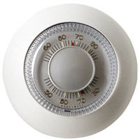
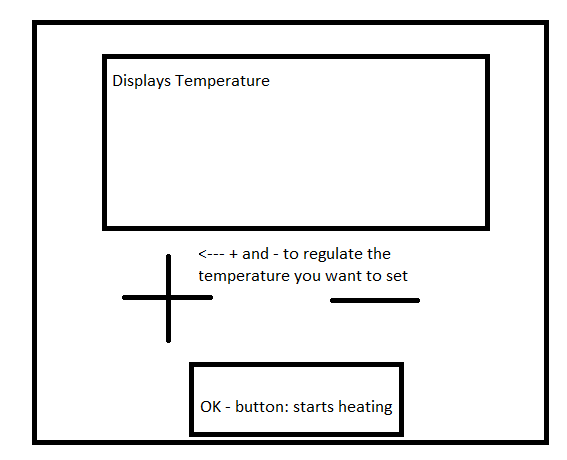
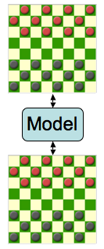

MIT assignment - Usability | |
| What am I supposed to do? The point of this activity is to start thinking about what it means for an interface to be usable. At right is a familiar user interface design: List some of the aspects of this design that have good usability, and some that have poor usability. Think about the aspects of usability we've discussed (learnability, memorability, efficiency, errors, satisfaction), and write down which aspect(s) of usability are involved in each good or bad point you cite. | |
| Taking a look at the points of usability I was asked to look at: • Learnability: Because you will be using the same way to lock (setting a certain amount of numbers to lock it, and using the same numbers to unlock it) I think this is easy enough to learn, and generally won't give any user problems. • Memorability: Device itself is not hard to remember how to use. The numbers you set can be meaningful ones, making it easy for you to remember. • Efficiency: Rotating features require an unnatural movement for the wrists and arms. Takes time to unlock, there is no fast way, trying to unlock at a speedy rate will increase likeliness of making errors. • Errors: Device is prone to errors. If you rotate the lock further than intended, you'll have to start all over again.Possibly even worse: you will mess up the code you are setting, changing it to something you might not remember. • Satisfaction: While easy to use and remember, this device is quite prone to errors and might not be very satisfying to the user. | |
|
| |
MIT assignment - Learnability | |
| What am I supposed to do? The goal of this activity is to think about how to design interfaces for learnability. Recall the thermostat example from lecture: some people believe that you can heat a room faster by setting the thermostat to a higher temperature than you really want, as if the thermostat were a valve for the heating system that lets more heat into the room the higher you set it. In fact, the thermostat is simply an on/off switch for the heat. It turns on as long as the room temperature is below the thermostat setting, and turns off when the thermostat setting is reached. Design a thermostat user interface that communicates its conceptual model to the user more effectively, so that users are less likely to make this mistake. Sketch your idea on a whiteboard, but don't stop with your first design. Critique it, and generate more designs. Don't worry too much about size, cost, difficulty of installation, or other tradeoffs. Certainly don't feel constrained by the old-fashioned thermostat design pictured at right. Be creative, and remember that we're focusing on usability in this class. A few things to think about: • Would it be enough to just print an explanation on the thermostat? If so, what exactly would it say? • A sink faucet is normally a valve, so turning it farther will make the sink fill up faster. Suppose you came across a sink faucet which was just an on/off switch. As a user, how could you tell right away? • Suppose you think you have a good design. How, specifically, would you test it? |  |
| What I came up with after thinking for a while: • In my opinion printing an explanation onto the thermostat wouldn't suffice for the simple fact every single person using the thermostat for the first time would have to read the explanation, and as a general fact people don't want to spend a lot of time on trivial things such as operating a thermostat. • If a sink faucet was designed as an on/off switch, it would be likely that the sink faucet wouldn't be able to turn very far, just enough to give the signal it's 'on' would be all, that's how I, as a user, would be able to find out • To test my design, I would test it by going around and asking people: This model I am holding is a design for a thermostat, how do you suppose it would operate? Please tell the first thought that pops into your mind about operating this thermostat. | |
| The design I came up with: I made a simple drawing of how I would design a thermostat to prevent the common mistakes. I made the design with a + and - button to increase temperature. Most users will figure out instantly that keeping it pressed for a while will make the temperature on the display rise faster, until it reaches the desired temperature. There is an OK button at the bottom to confirm the temperature, and the heating will be turned on. I designed it like this so people will not misunderstand the fact the temperature doesn't rise faster when a higher temperature is set at first. The ok button is supposed to make users think it's an on/off kind of design. Of course, depending on the temperature you set, it will be on for a shorter or longer period of time. |  |
|
| |
MIT assignment - Visibility |  |
| What am I supposed to do? The purpose of this activity is to explore aspects of visibility in design. Suppose you're designing an interface for two players to play checkers (also called draughts) across the Internet. The picture on the right shows the scenario: each player has an interface on their screen, and the state of the game is stored on a network server that both communicate with. Guided by the categories below, make a list of what needs to be made visible, and then brainstorm (and sketch) how the interface might make it visible. • Actions: what can the user do? • State: what is the current state of the system? • Feedback: what was the effect of the user's action? | |
|
What needs to be made visible? Actions: • Which moves are available to the player? • Is there any possibility of defeating any of the opponents pawns? State: • -Whose turn is it currently? • -How many defeated pawns does each player have? • -What is the remaining amount of pawns in the game for each player? Feedback: • -I didn't look at the board for a moment, what did my opponent do? Did he just move, or was one of my pawns defeated while I wasn't looking? • -I'm not sure if my move actually worked, how do I know? How do I make it visible? Actions: • I can highlight the different moves available with colour X. • I can highlight the option of beating an opponents pawn with colour Y. State: • The current player's turn is indicated by a subtle arrow at the player's name • On each player's right side next to the board, the amount of beaten pawns with the appropriate colour is shown. • On the left side of the board for each player the amount of pawns they have left is shown. Feedback: • To solve both the issues given in the upper section, I suggest displaying a short message on the screen above the board to indicate what happened during the last move, regardless of who made the move. | |